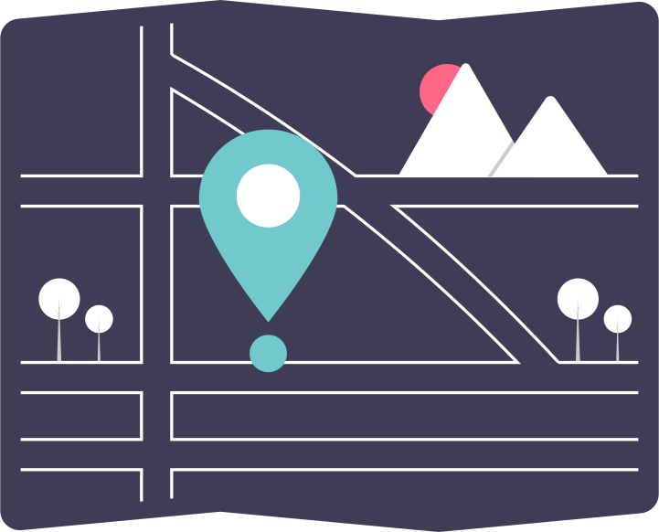

<ion-header>
  <ion-toolbar>
    <ion-title>Driver Home</ion-title>
    <ion-buttons slot="end">
      <ion-button color="primary" (click)="doLogout()">Logout</ion-button>
    </ion-buttons>
  </ion-toolbar>
</ion-header>

<ion-content>
  <div class="container">
    
    <h3>Welcome, <span class="highlight">{{driverName}}</span></h3>
    <ion-button class="primary" [routerLink]="['/driver-map']" routerDirection="forward" [disabled]="!isAssigned">Plot Route</ion-button>
  </div>
</ion-content>
